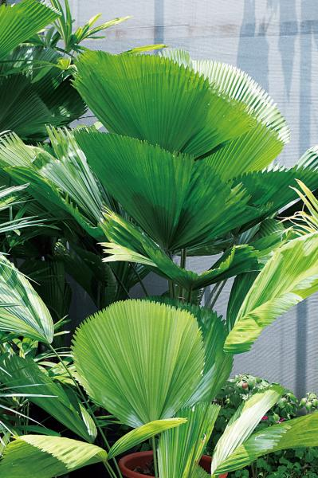
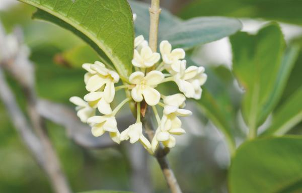

在空間較大的環境中，適合落地型大型植物伸展，或是邊桌上的中型盆栽擺放，簡單一、兩盆，馬上就有充滿綠意的舒適視覺效果。
禪風花園雅緻清幽，看著看著，心情也跟著放鬆寧靜下來。在家中複製一個充滿禪味的角落並不難，.....

想在炎熱的夏天繁殖新植株，有沒有什麼方法呢？這時必須使用壓條法，這是唯一即使在炎熱夏季也容易操作的繁殖法喔！.....
當鼻子過敏，或是發生感冒的症狀，如：咳嗽、打噴嚏、鼻塞，可以使用能提高「肺」功能的精油，利用吸嗅法來調整身體內外的「.....
整理花園時，不小心掉下來的多肉，與新生的小多肉要怎麼處理呢？拿出細鐵絲，將多肉寶寶修剪、纏繞之後，迷你可愛的多肉花圈.....
特殊蘭屬植物的花朵幾乎都特化成「陷阱」，以確保蘭花蜜蜂來偷「香水」時，可以萬無一失地將花粉塊「偷.....